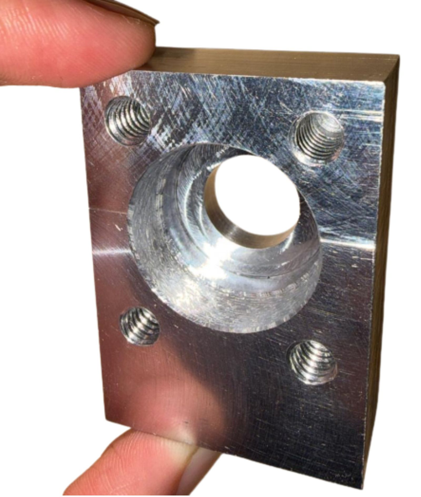
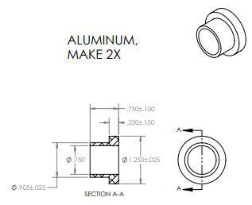
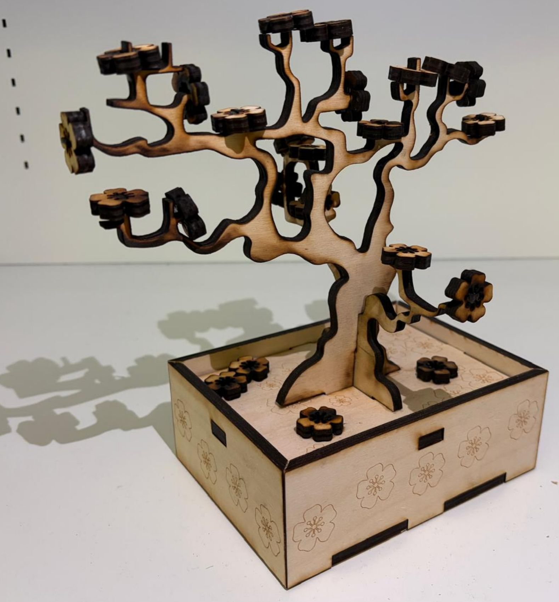
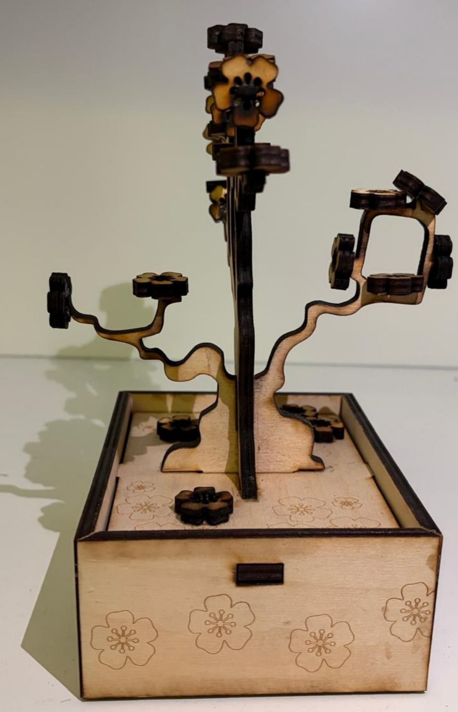
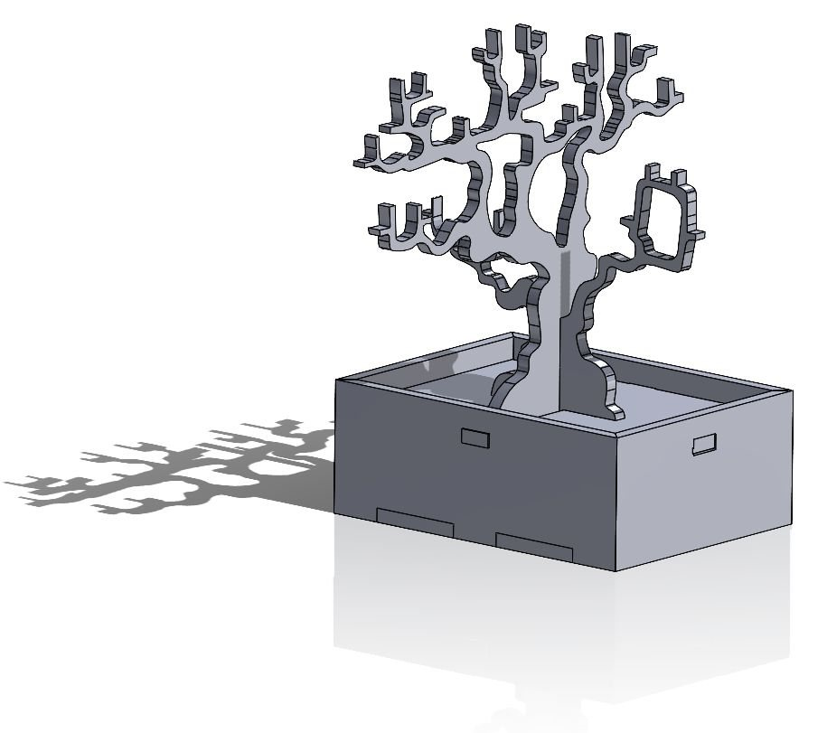
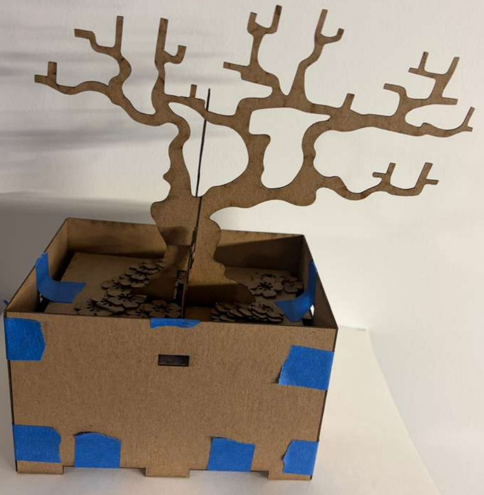
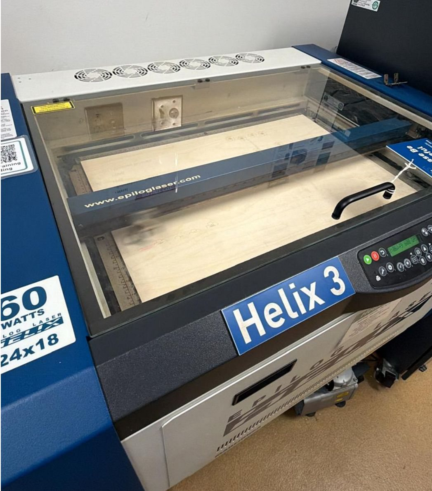
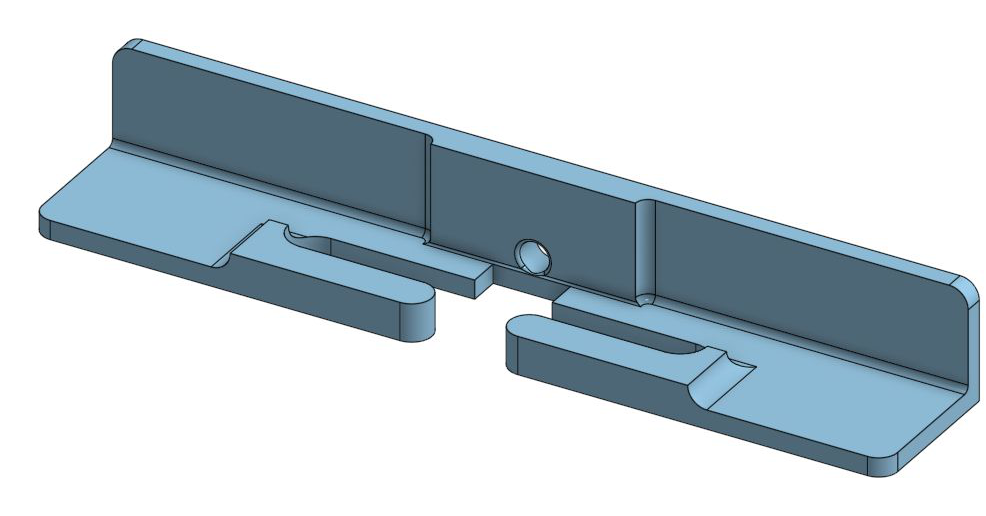
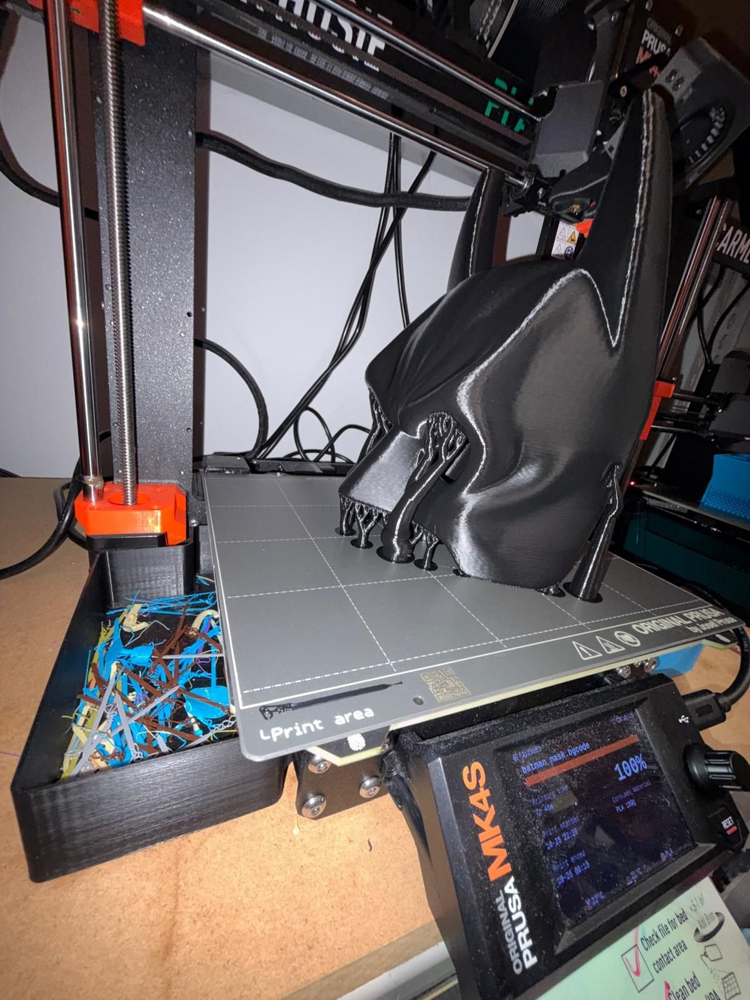
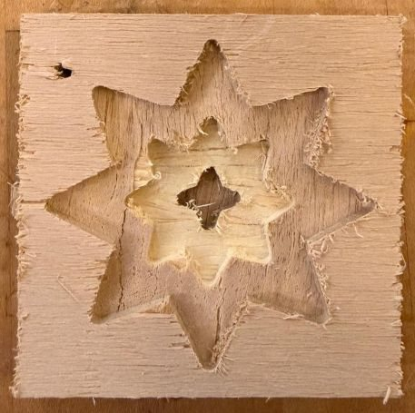

Machining & Fabrication
Machining custom parts for precise engineering purposes and decorative pieces.
[TODO: 1–2 sentences on what you enjoy about machining and where you learned it.]
Baja SAE parts
For Olin Baja SAE, I machined the wheel hub and a fork bushing housing on the manual and CNC mill, programming the toolpaths in Fusion CAM, and turned steering column spacers on the manual lathe, making sure they fit and aligned properly.


Bonsai Tree "Box"
A 3D potted bonsai tree fabricated from plywood on the laser cutter. I made it to build hands-on experience with SolidWorks, laser cutting and rastering, and to get familiar with joints, fasteners, kerf, and tolerancing. It uses butt, mitered butt, mortise and tenon, half-lap, and box joints, held together with nails, tape, screws, and glue.


I designed the box in SolidWorks, which improved my part modeling and assembly and taught me to troubleshoot misalignment. Before the final cut, I made chipboard prototypes to test joint fit and refine tolerances, and calibrated the laser cutter's speed, power, and frequency for both cutting and rastering. That gave clean cuts, well-defined engravings, tighter press-fit joints, and fewer re-cuts from tolerance errors.



Challenges
- Material limits and burn marks. I optimized laser speed and power and validated the geometry in chipboard to reduce reruns and charring.
- Half-lap misalignment after a geometry change. I corrected the fit by sanding the mating edge and reinforcing the joint with adhesive.
- 45° miter accuracy. I used a belt sander with an angle guide to refine the miters and get tighter corner joints.
Other builds
I designed and manufactured a replacement window component, restoring its function without the OEM part; designed and fabricated a custom Halloween mask; and CAM-programmed and machined a decorative piece on the CNC router.


